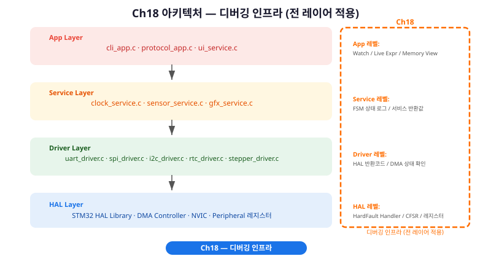
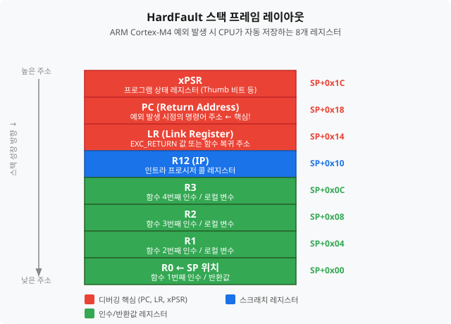
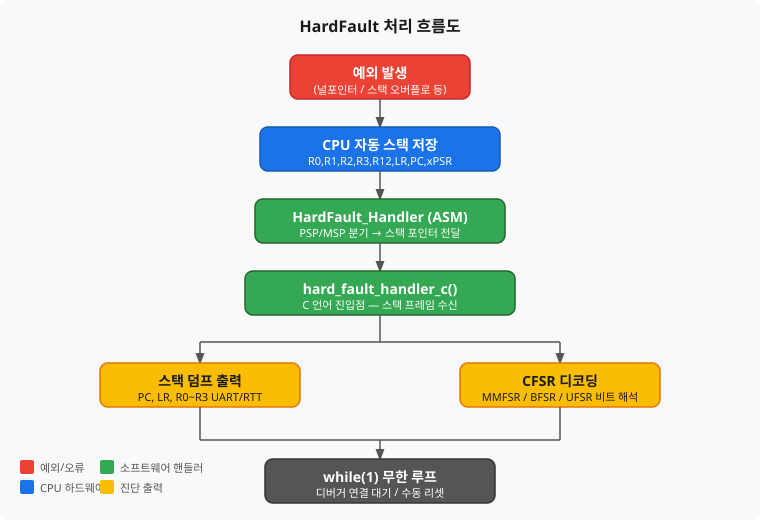
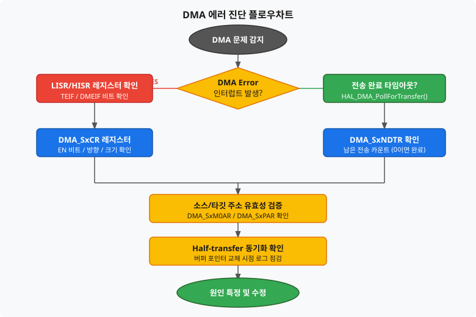
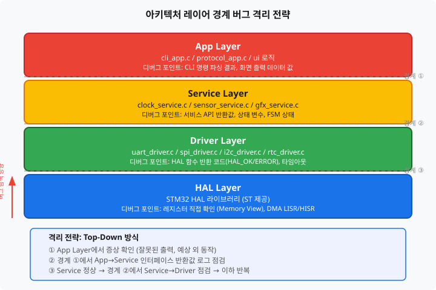

HardFault 핸들러 구현부터 DMA 에러 패턴, 로직 애널라이저 파형 분석, 아키텍처 관점 버그 격리 전략까지 — 실무 디버깅의 전체 흐름을 체계화합니다.
디버깅 인프라는 특정 레이어에 국한되지 않습니다. HAL부터 App까지 전 레이어에 걸쳐 적용되는 횡단 관심사(Cross-Cutting Concern)입니다. 각 레이어 경계마다 관찰 포인트를 설치하는 것이 핵심입니다.

이 챕터에서 추가되는 디버깅 API입니다. 기존 코드를 수정하지 않고 추가(Add-on) 방식으로 통합합니다.
/* ch18_hardfault_handler.c — HardFault 진단 */
void HardFault_Handler(void); /* ASM 스텁 (startup override) */
void hard_fault_handler_c(uint32_t *stack_frame); /* C 진입점 */
/* ch18_dma_debug.c — DMA 진단 패턴 */
HAL_StatusTypeDef dma_transfer_with_timeout(DMA_HandleTypeDef *hdma, uint32_t timeout_ms);
void dma_error_callback(DMA_HandleTypeDef *hdma);
HAL_StatusTypeDef uart_tx_dma_safe(const uint8_t *data, uint16_t len);
/* ch18_rtt_advanced.c — RTT 다채널 + 타임스탬프 */
void rtt_advanced_init(void);
void rtt_dma_log(const char *fmt, ...);
void rtt_hardfault_log(const char *msg);
void debug_ring_buffer_status(const char *name, uint32_t used, uint32_t cap, uint32_t overflow_cnt);
이 챕터를 완료하면 다음을 할 수 있습니다.
개발자라면 누구나 printf() 또는 LED 깜박임으로 디버깅을 시작합니다. 하지만 실무 환경에서는 코드 실행을 중단하지 않고도 내부 상태를 실시간으로 관찰해야 하는 상황이 자주 발생합니다. STM32CubeIDE의 디버거는 이를 위한 강력한 도구를 내장하고 있습니다.
Watch Window는 실행이 중단된 상태에서 변수·레지스터·메모리 주소의 값을 상세히 확인합니다. 구조체 멤버, 포인터 역참조, 비트 필드까지 트리 구조로 펼쳐볼 수 있습니다.
사용 방법:
g_sensor_data, *hdma_usart2_tx.State, (uint32_t*)0xE000ED28 (CFSR 레지스터 직접 접근)Live Expression(라이브 표현식)은 코드가 실행 중인 상태에서도 지속적으로 값을 갱신합니다. ST-LINK가 약 100ms 주기로 폴링하여 값을 읽어옵니다. DMA 전송 카운터, 링 버퍼 포인터, FSM 상태 변수를 실시간으로 모니터링하기에 적합합니다.
/* uart_driver.c — Live Expression으로 관찰할 전역 변수들 */
/* DMA 전송 상태 (Live Expression 등록 권장) */
volatile uint32_t g_uart_tx_count = 0; /* 전송 완료 횟수 */
volatile uint32_t g_uart_rx_count = 0; /* 수신 완료 횟수 */
volatile uint32_t g_uart_error_count = 0; /* 에러 발생 횟수 */
/* 링 버퍼 포인터 (Live Expression으로 write/read 격차 관찰) */
volatile uint16_t g_ring_buf_write_idx = 0;
volatile uint16_t g_ring_buf_read_idx = 0;
void HAL_UART_TxCpltCallback(UART_HandleTypeDef *huart)
{
if (huart->Instance == USART2) {
g_uart_tx_count++;
LOG_D("UART TX 완료 — 누적 %lu회", g_uart_tx_count);
}
}
Memory View(메모리 뷰)는 특정 주소의 바이트 내용을 16진수와 ASCII로 표시합니다. 링 버퍼 데이터 내용 확인, DMA 대상 버퍼 값 검증, 스택 영역 오염 여부 점검에 활용합니다.
사용 방법:
&g_ring_buf.buf (변수 주소) 또는 0x20000000 (RAM 시작)/* 메모리 오염 여부 확인을 위한 스택 경계 마커 */
/* startup_stm32f411retx.s에서 스택 크기 확인 후 아래 사용 */
/* 스택 시작(낮은 주소) 부근에 마커 패턴 삽입 */
#define STACK_CANARY_VALUE 0xDEADBEEF
#define STACK_CANARY_ADDR ((volatile uint32_t *)0x20000000) /* RAM 시작 */
void debug_check_stack_canary(void)
{
if (*STACK_CANARY_ADDR != STACK_CANARY_VALUE) {
LOG_E("스택 오버플로우 감지! 카나리 값 손상: 0x%08lX (기대: 0x%08lX)",
*STACK_CANARY_ADDR, (uint32_t)STACK_CANARY_VALUE);
} else {
LOG_D("스택 카나리 정상: 0x%08lX", *STACK_CANARY_ADDR);
}
}
STM32CubeIDE가 ST-LINK를 인식하지 못하거나, 연결이 불안정하거나, RTT 기능이 동작하지 않을 때는 ST-LINK 내장 펌웨어가 구버전일 가능성이 있습니다. STM32CubeProgrammer로 간단히 업그레이드할 수 있습니다.
업그레이드 절차:
STM32 개발 중 화면이 갑자기 멈추거나 시스템이 리셋될 때, 원인을 전혀 알 수 없어 막막한 경험이 있으신가요? 대부분의 경우 그 원인은 HardFault(하드 폴트) 예외입니다. HardFault는 처음 마주치면 공포스럽지만, 알고 보면 "어디서 죽었는지"를 정확히 알려주는 가장 친절한 예외입니다.
예외(Exception)가 발생하는 순간, ARM Cortex-M4 CPU는 현재 실행 중이던 컨텍스트를 스택에 자동으로 저장합니다. 이 저장된 데이터를 스택 프레임(Stack Frame)이라고 하며, R0, R1, R2, R3, R12, LR, PC, xPSR 총 8개 레지스터가 포함됩니다.

이 8개 레지스터 중 디버깅에서 가장 중요한 것은 PC(Program Counter)입니다. PC 값이 HardFault 직전 실행된 명령어의 주소이므로, 이 주소를 Disassembly 뷰에서 찾으면 원인 코드 라인을 특정할 수 있습니다.

기본 HAL 라이브러리에서 제공하는 HardFault_Handler()는 단순히 무한 루프만 실행합니다. 이를 스택 덤프를 출력하는 핸들러로 override합니다.
구현 원리: ASM 스텁이 PSP/MSP를 판별하여 스택 포인터를 C 함수에 전달합니다.
/* ch18_hardfault_handler.c */
/* PSP/MSP 분기 ASM 스텁 — 스택 포인터를 R0에 담아 C 함수로 전달
* 이 어셈블리 4줄은 이해 없이 복사해서 써도 됩니다.
* 동작: LR 비트4로 MSP(0)/PSP(1) 판별 → R0에 담아 C 함수 호출 */
__attribute__((naked))
void HardFault_Handler(void)
{
__asm volatile (
"TST LR, #4 \n" /* LR 비트4: 0=MSP, 1=PSP 사용 */
"ITE EQ \n"
"MRSEQ R0, MSP \n" /* 메인 스택 포인터 선택 */
"MRSNE R0, PSP \n" /* 프로세스 스택 포인터 선택 */
"B hard_fault_handler_c \n"
);
}
/* C 언어 진입점 — 스택 프레임 분석 및 덤프 출력 */
void hard_fault_handler_c(uint32_t *stack_frame)
{
LOG_E("=== HARD FAULT DETECTED ===");
/* 스택 프레임 덤프 */
LOG_E("R0 = 0x%08lX", stack_frame[0]);
LOG_E("R1 = 0x%08lX", stack_frame[1]);
LOG_E("R2 = 0x%08lX", stack_frame[2]);
LOG_E("R3 = 0x%08lX", stack_frame[3]);
LOG_E("R12 = 0x%08lX", stack_frame[4]);
LOG_E("LR = 0x%08lX (EXC_RETURN 패턴)", stack_frame[5]);
LOG_E("PC = 0x%08lX <- 이 주소에서 예외 발생!", stack_frame[6]);
LOG_E("xPSR= 0x%08lX", stack_frame[7]);
/* CFSR 레지스터 읽기 */
uint32_t cfsr = *((volatile uint32_t *)0xE000ED28);
LOG_E("CFSR = 0x%08lX", cfsr);
/* BFSR: PRECISERR(비트9) — 정확한 데이터 버스 오류 */
if (cfsr & (1U << 9)) LOG_E(" >> PRECISERR: 데이터 버스 오류, PC 신뢰 가능");
/* UFSR: DIVBYZERO(비트25) — 0 나누기 */
if (cfsr & (1U << 25)) LOG_E(" >> DIVBYZERO: 0으로 나누기 오류");
/* UFSR: UNDEFINSTR(비트16) — 미정의 명령어 */
if (cfsr & (1U << 16)) LOG_E(" >> UNDEFINSTR: 미정의 명령어 (함수 포인터 오염 의심)");
LOG_E("=== 디버거 연결 또는 리셋 필요 ===");
while (1) { __NOP(); }
}
HardFault 핸들러에서 LR 레지스터는 EXC_RETURN 패턴을 담고 있습니다. 이 값으로 예외 발생 당시 어떤 스택이 사용되고 있었는지, FPU가 활성화되어 있었는지 알 수 있습니다.
/* EXC_RETURN 패턴 해석 */
void decode_exc_return(uint32_t lr)
{
LOG_I("LR(EXC_RETURN) = 0x%08lX", lr);
if (lr == 0xFFFFFFF9UL) {
LOG_I(" >> MSP 사용, FPU 컨텍스트 없음 (일반적인 메인 컨텍스트)");
} else if (lr == 0xFFFFFFFDUL) {
LOG_I(" >> PSP 사용, FPU 컨텍스트 없음 (RTOS 태스크 컨텍스트)");
} else if (lr == 0xFFFFFFE9UL) {
LOG_I(" >> MSP 사용, FPU 컨텍스트 있음");
} else if (lr == 0xFFFFFFEDUL) {
LOG_I(" >> PSP 사용, FPU 컨텍스트 있음");
} else {
LOG_W(" >> 알 수 없는 EXC_RETURN 패턴 — 스택 오염 의심");
}
}
가장 흔한 HardFault 원인 중 하나는 널 포인터 역참조(Null Pointer Dereference)입니다. 미초기화 포인터에 값을 쓰거나 읽을 때 발생합니다.
/* sensor_service.c — 버그 시나리오 A */
typedef struct {
float temperature;
float humidity;
} sensor_data_t;
/* 버그: 포인터 초기화 누락 */
sensor_data_t *g_sensor_ptr; /* NULL 상태 — 초기화되지 않음 */
void sensor_service_update(void)
{
/* 이 라인에서 HardFault 발생!
* g_sensor_ptr == NULL(0x00000000)에 쓰기 시도
* CFSR: BFSR PRECISERR 비트 설정됨 */
g_sensor_ptr->temperature = 25.0f; /* <-- PC가 이 라인을 가리킴 */
LOG_I("온도: %.1f°C", g_sensor_ptr->temperature);
}
/* 수정된 코드 */
static sensor_data_t g_sensor_data; /* 정적 할당으로 변경 */
sensor_data_t *g_sensor_ptr = &g_sensor_data; /* 초기화 추가 */
Ch05에서 DMA의 동작 원리를 배웠습니다. DMA는 CPU 개입 없이 고속으로 데이터를 이동시키지만, 그만큼 문제가 발생했을 때 원인을 파악하기 어렵습니다. 이 절에서는 실제 프로젝트에서 자주 발생하는 DMA 관련 버그 3종과 그 진단 방법을 다룹니다.

HAL 함수를 거치지 않고 레지스터를 직접 읽으면 HAL 상태와 무관하게 하드웨어 실제 상태를 확인할 수 있습니다.
/* DMA 상태 레지스터 직독 유틸리티 */
void debug_dma1_status(void)
{
/* DMA1 기준 — F411 Reference Manual RM0383 참조 */
uint32_t lisr = *((volatile uint32_t *)0x40026000); /* DMA1_LISR */
uint32_t hisr = *((volatile uint32_t *)0x40026004); /* DMA1_HISR */
LOG_D("DMA1 LISR = 0x%08lX", lisr);
LOG_D("DMA1 HISR = 0x%08lX", hisr);
/* LISR 비트 레이아웃 (RM0383 Table 43 참조)
* Stream: 3 2 1 0
* 비트: [31..22] [21..16] [15..10] [9..6] [5..0]
* 각 스트림당 6비트: [TCIFx, HTIFx, TEIFx, DMEIFx, -, FEIFx]
*
* Stream0: TCIF0=5, HTIF0=4, TEIF0=3, DMEIF0=2, FEIF0=0
* Stream1: TCIF1=11, HTIF1=10, TEIF1=9, DMEIF1=8, FEIF1=6
* (이하 동일 패턴, 6비트씩 오프셋)
*
* TEIF: Transfer Error (전송 에러) — 주로 잘못된 주소 접근
* DMEIF: Direct Mode Error — FIFO 미사용(직접 모드)에서 오버런
* FEIF: FIFO Error — FIFO 사용 시 오버런/언더런 */
if (lisr & (1U << 5)) LOG_D(" Stream0: 전송 완료(TCIF)");
if (lisr & (1U << 4)) LOG_D(" Stream0: 반전송 완료(HTIF)");
if (lisr & (1U << 3)) LOG_E(" Stream0: 전송 에러(TEIF) 발생!");
if (lisr & (1U << 2)) LOG_E(" Stream0: 직접모드 에러(DMEIF) 발생!");
if (lisr & (1U << 0)) LOG_W(" Stream0: FIFO 에러(FEIF) 발생");
/* SxNDTR: 남은 전송 바이트 수 (Stream0 기준) */
/* DMA1_Stream0_BASE = 0x40026010 */
uint32_t ndtr = *((volatile uint32_t *)(0x40026010 + 0x14)); /* SxNDTR */
LOG_D("DMA1 Stream0 남은 전송 = %lu 바이트", ndtr);
}
CLI 명령을 빠르게 연속 입력할 때 UART TX DMA가 이전 전송을 끝내기 전에 다시 시작되면 데이터가 섞이거나 HardFault가 발생합니다. DMA 상태를 확인하는 가드 코드로 해결합니다.
/* uart_driver.c — DMA 재진입 방지 패턴 */
extern UART_HandleTypeDef huart2;
HAL_StatusTypeDef uart_tx_dma_safe(const uint8_t *data, uint16_t len)
{
/* DMA 전송 중이면 스킵 (논블로킹) */
if (huart2.hdmatx != NULL &&
huart2.hdmatx->State == HAL_DMA_STATE_BUSY) {
LOG_W("UART TX DMA 사용 중 — len=%u 스킵", len);
return HAL_BUSY;
}
HAL_StatusTypeDef status = HAL_UART_Transmit_DMA(&huart2,
(uint8_t *)data, len);
if (status != HAL_OK) {
LOG_E("TX DMA 시작 실패: status=%d, gState=%d",
(int)status, (int)huart2.gState);
}
return status;
}
디버그 로그 출력 과다(LOG_LEVEL=DEBUG)로 링 버퍼 쓰기 속도가 읽기 속도를 초과하면 로그 메시지가 손실됩니다. 오버플로우 카운터를 추가하여 조기 경고를 구현합니다.
/* ring_buffer.c — Ch06 구현에 오버플로우 카운터 추가 */
typedef struct {
uint8_t buf[RING_BUF_SIZE];
uint16_t write_idx;
uint16_t read_idx;
uint32_t overflow_cnt; /* Ch18 추가: 오버플로우 발생 횟수 */
} ring_buffer_t;
/* 오버플로우 감지 버전의 push 함수 */
bool ring_buf_push(ring_buffer_t *rb, uint8_t data)
{
uint16_t next_write = (rb->write_idx + 1U) % RING_BUF_SIZE;
if (next_write == rb->read_idx) {
/* 버퍼 가득 참 — 오버플로우 */
rb->overflow_cnt++;
/* 주의: LOG 호출 금지 — 재귀 호출 위험 */
return false;
}
rb->buf[rb->write_idx] = data;
rb->write_idx = next_write;
return true;
}
/* 상태 진단 (main 루프 또는 타이머에서 주기적 호출) */
void ring_buf_diagnose(ring_buffer_t *rb, const char *name)
{
uint16_t used;
if (rb->write_idx >= rb->read_idx) {
used = rb->write_idx - rb->read_idx;
} else {
used = RING_BUF_SIZE - rb->read_idx + rb->write_idx;
}
uint32_t pct = (used * 100U) / RING_BUF_SIZE;
if (rb->overflow_cnt > 0U) {
LOG_E("링버퍼[%s] 오버플로우 %lu회! 사용률=%lu%%", name, rb->overflow_cnt, pct);
LOG_W(" >> 해결: LOG_LEVEL 상향 또는 RING_BUF_SIZE 증가");
} else if (pct > 80U) {
LOG_W("링버퍼[%s] 사용률 높음: %lu%%", name, pct);
}
}
코드 레벨 디버깅만으로는 해결되지 않는 문제들이 있습니다. "HAL은 정상 반환하는데 LCD에는 아무것도 안 보인다", "SHT31이 ACK를 보내지 않는다" — 이런 상황에서는 실제 신호 파형을 눈으로 확인해야 합니다.
약 5~10달러 수준의 USB 로직 애널라이저(Saleae Logic 호환 장치)와 무료 소프트웨어 PulseView(sigrok)로 충분합니다.
NUCLEO-F411RE 연결 핀 (Ch12/Ch13 SPI 기준):
로직 애널라이저 → NUCLEO 핀
CH0 → PA5 (SPI1_SCK)
CH1 → PA6 (SPI1_MISO)
CH2 → PA7 (SPI1_MOSI)
CH3 → PA4 (CS — GPIO 수동 제어)
GND → NUCLEO GND (반드시 연결)
ILI9341 초기화 실패의 가장 흔한 원인은 CS 핀 타이밍과 CPOL/CPHA 설정 불일치입니다.
/* SPI 파형 분석을 위한 진단 로그 추가 */
/* spi_driver.c */
HAL_StatusTypeDef spi_transmit_with_log(SPI_HandleTypeDef *hspi,
uint8_t *data, uint16_t size,
uint32_t timeout)
{
LOG_D("SPI TX 시작: size=%u, CR1=0x%08lX", size, hspi->Instance->CR1);
/* CS 핀 LOW (전송 시작) */
HAL_GPIO_WritePin(LCD_CS_GPIO_Port, LCD_CS_Pin, GPIO_PIN_RESET);
LOG_D("CS LOW");
HAL_StatusTypeDef status = HAL_SPI_Transmit(hspi, data, size, timeout);
/* CS 핀 HIGH (전송 완료) */
HAL_GPIO_WritePin(LCD_CS_GPIO_Port, LCD_CS_Pin, GPIO_PIN_SET);
LOG_D("CS HIGH, status=%d", (int)status);
if (status != HAL_OK) {
LOG_E("SPI 전송 실패: status=%d, SR=0x%08lX",
(int)status, hspi->Instance->SR);
/* SR: TXE(비트1), BSY(비트7), OVR(비트6) 확인 */
}
return status;
}
I2C 통신 실패의 주요 원인은 풀업 저항 값과 ACK/NACK 타이밍입니다.
로직 애널라이저에서 확인해야 할 사항:
/* i2c_driver.c — I2C 통신 진단 로그 */
HAL_StatusTypeDef i2c_mem_read_with_diag(I2C_HandleTypeDef *hi2c,
uint16_t dev_addr,
uint8_t *data, uint16_t size)
{
LOG_D("I2C Read 시작: 주소=0x%02X, 크기=%u", dev_addr >> 1, size);
HAL_StatusTypeDef status = HAL_I2C_Master_Receive(
hi2c, dev_addr, data, size, 100);
if (status == HAL_ERROR) {
uint32_t err = HAL_I2C_GetError(hi2c);
LOG_E("I2C 수신 실패: error=0x%08lX", err);
if (err & HAL_I2C_ERROR_AF) {
LOG_E(" >> AF(Acknowledge Failure): 슬레이브 주소 미응답");
LOG_E(" 확인: 1) 주소 0x%02X 맞는지, 2) 풀업 저항 연결, 3) 전원 OK",
dev_addr >> 1);
}
if (err & HAL_I2C_ERROR_TIMEOUT) {
LOG_E(" >> TIMEOUT: SCL 클럭 스트레칭 초과 또는 버스 잠금");
LOG_E(" 해결: HAL_I2C_DeInit() 후 HAL_I2C_Init() 재초기화");
}
} else {
LOG_D("I2C 수신 완료: 첫 바이트=0x%02X", data[0]);
}
return status;
}
Ch02에서 SWO/ITM printf 리다이렉트와 SEGGER RTT 기본 사용법을 배웠습니다. 이 절에서는 두 방식을 심화하여 복잡한 실무 환경에서 활용하는 방법을 다룹니다. 특히 RTT 다채널을 이용하면 일반 로그, DMA 진단, HardFault 긴급 채널을 분리하여 각각 독립적으로 수신할 수 있습니다.
두 방식의 특성을 이해하면 상황에 맞는 선택을 할 수 있습니다.
[ ITM/SWO 특성 ]
+ STM32CubeIDE에 기본 내장, 별도 라이브러리 불필요
+ SWV(Serial Wire Viewer) 타임라인 기능 활용 가능
- SWO 전용 핀(PB3) 추가 연결 필요
- 고속 출력 시 버퍼 오버플로우로 데이터 손실 가능
- 단방향 (MCU→PC)
[ SEGGER RTT 특성 ]
+ SWD 2핀(SWDIO, SWDCLK)만으로 동작 — SWO 핀 불필요
+ 양방향 (MCU↔PC) — 런타임에 로그 레벨 변경 가능
+ 다채널 지원 (채널 0~255)
+ HardFault 등 인터럽트 컨텍스트에서도 안전
+ J-Link RTT Viewer 또는 STM32CubeIDE 터미널로 수신
- SEGGER RTT 라이브러리 추가 필요 (무료)
채널 0은 일반 로그, 채널 1은 DMA 진단, 채널 2는 HardFault 긴급 출력으로 분리합니다.
/* ch18_rtt_advanced.c — RTT 다채널 초기화 */
/* RTT 채널 전용 버퍼 (.noinit 섹션 — 리셋 후에도 보존) */
static char rtt_buf_dma[2048] __attribute__((section(".noinit")));
static char rtt_buf_hf[512] __attribute__((section(".noinit")));
void rtt_advanced_init(void)
{
SEGGER_RTT_Init();
/* 채널 1: DMA 진단 — BLOCK 모드 (손실 없음, 버퍼 차면 블로킹)
* BLOCK_IF_FIFO_FULL = 느리지만 데이터 손실 없음 — 분석용 채널에 적합 */
SEGGER_RTT_ConfigUpBuffer(1, "DMA_Diag",
rtt_buf_dma, sizeof(rtt_buf_dma),
SEGGER_RTT_MODE_BLOCK_IF_FIFO_FULL);
/* 채널 2: HardFault 긴급 — SKIP 모드 (빠르지만 손실 가능)
* NO_BLOCK_SKIP = 빠르고 블로킹 없음, 인터럽트 컨텍스트에서 안전
* HardFault 핸들러에서 블로킹하면 시스템이 더 이상 진행 불가 */
SEGGER_RTT_ConfigUpBuffer(2, "HardFault",
rtt_buf_hf, sizeof(rtt_buf_hf),
SEGGER_RTT_MODE_NO_BLOCK_SKIP);
LOG_I("RTT 다채널 초기화: CH0=일반, CH1=DMA, CH2=긴급");
}
RTT 로그에 마이크로초(μs) 타임스탬프를 추가하면 DMA 전송 시간, 인터럽트 레이턴시 등 정밀 타이밍 분석이 가능합니다. DWT(Data Watchpoint and Trace) 사이클 카운터를 활용합니다.
/* DWT 사이클 카운터 초기화 */
void dwt_init(void)
{
/* CoreSight 잠금 해제 키 — ARM 아키텍처 공식 고정 값 (변경 불가) */
/* 0xC5ACCE55 = "C5 ACCESS" 의미, DWT/ITM 레지스터 쓰기 허용 */
*((volatile uint32_t *)0xE0001FB0) = 0xC5ACCE55;
/* DWT 사이클 카운터 활성화 */
CoreDebug->DEMCR |= CoreDebug_DEMCR_TRCENA_Msk;
*((volatile uint32_t *)0xE0001004) = 0; /* CYCCNT 리셋 */
*((volatile uint32_t *)0xE0001000) |= 1U; /* CYCCNTENA */
LOG_D("DWT 초기화 완료 — 마이크로초 타임스탬프 사용 가능");
}
/* 마이크로초 단위 타임스탬프 */
static uint32_t get_us(void)
{
/* 100MHz 기준: 사이클 ÷ 100 = 마이크로초 */
return *((volatile uint32_t *)0xE0001004) / 100U;
}
/* DMA 채널 타임스탬프 로그 */
void rtt_dma_log(const char *fmt, ...)
{
char buf[128];
int n = snprintf(buf, sizeof(buf), "[%lu us] ", get_us());
va_list args;
va_start(args, fmt);
vsnprintf(buf + n, sizeof(buf) - n, fmt, args);
va_end(args);
SEGGER_RTT_WriteString(1, buf); /* DMA 진단 채널 */
}
"버그는 코드 어딘가에 있는 거 아닌가요?" — 맞는 말입니다. 하지만 코드 전체를 처음부터 살펴보는 것은 비효율적입니다. Ch03부터 적용해 온 레이어드 아키텍처(HAL → Driver → Service → App)는 디버깅 시에도 강력한 도구가 됩니다. 버그가 어느 레이어에서 발생했는지 먼저 확인하면 탐색 범위를 대폭 줄일 수 있습니다.

각 레이어 경계(인터페이스)에서 입출력 값을 로그로 남기면 어느 경계에서 값이 잘못되기 시작하는지 추적할 수 있습니다.
/* sensor_service.c — 레이어 경계 로그 패턴 */
/**
* @brief 온습도 서비스 업데이트
* Driver 레이어 호출 전후 로그로 경계 값 추적
*/
HAL_StatusTypeDef sensor_service_update(float *temp, float *humi)
{
/* === Service Layer 진입 로그 === */
LOG_D("[Service→Driver] SHT31_Read 호출");
/* Driver 레이어 호출 */
HAL_StatusTypeDef status = SHT31_Read(temp, humi);
/* === Driver→Service 경계 반환값 로그 === */
if (status != HAL_OK) {
LOG_E("[Driver→Service] SHT31_Read 실패: status=%d", (int)status);
LOG_E(" >> Driver 레이어 또는 HAL(I2C) 문제로 격리 필요");
return status;
}
LOG_D("[Driver→Service] 온도=%.1f, 습도=%.1f — Driver 정상", *temp, *humi);
/* 서비스 로직: 온도 임계값 초과 시 알람 */
if (*temp > 35.0f) {
LOG_W("[Service→App] 온도 임계값 초과: %.1f°C", *temp);
/* App 레이어에 알람 이벤트 전달 */
}
return HAL_OK;
}
레이어 경계 계약은 "이 함수에 이 범위의 값이 들어오면 이 범위의 값을 돌려준다"는 암묵적 약속입니다. 입력값 유효성 검사(Assert)로 계약 위반을 조기에 감지합니다.
/* 레이어 경계 계약 검사 매크로 */
#ifdef DEBUG
#define LAYER_ASSERT(cond, msg) \
do { \
if (!(cond)) { \
LOG_E("[계약위반] %s:%d — %s", __FILE__, __LINE__, msg); \
while(1) { __NOP(); } \
} \
} while(0)
#else
#define LAYER_ASSERT(cond, msg) /* Release 빌드에서 제거 */
#endif
/* 사용 예시: Driver 레이어 API 입구에서 계약 검사 */
HAL_StatusTypeDef SHT31_Read(float *temp_out, float *humi_out)
{
/* 계약: 포인터는 NULL이 아니어야 한다 */
LAYER_ASSERT(temp_out != NULL, "temp_out 포인터가 NULL입니다");
LAYER_ASSERT(humi_out != NULL, "humi_out 포인터가 NULL입니다");
/* ... 실제 I2C 읽기 구현 ... */
/* 계약: 반환값은 -40~125°C 범위여야 한다 */
LAYER_ASSERT(*temp_out >= -40.0f && *temp_out <= 125.0f,
"온도 값이 SHT31 측정 범위를 벗어났습니다");
return HAL_OK;
}
다음 순서로 v2.0 프로젝트에 디버깅 인프라를 통합합니다:
ch18_hardfault_handler.c를 프로젝트에 추가, 기존 startup 파일의 weak HardFault_Handler를 overridertt_advanced_init()을 main() 최상단에서 호출LOG_D 진입/퇴장 로그 추가목표: HardFault 핸들러를 구현하고 의도적 버그로 덤프를 생성한 뒤, PC 값으로 원인 라인을 특정합니다. 또한 UART TX DMA 재진입 방지 코드를 적용하여 CLI 안정성을 향상합니다.
환경: STM32CubeIDE, NUCLEO-F411RE, SEGGER J-Link (또는 ST-LINK + RTT Viewer)
code_examples/ch18_hardfault_handler.c 추가Core/Src/stm32f4xx_it.c의 HardFault_Handler가 이미 있다면 제거 (중복 심볼 오류 방지)main.c의 /* USER CODE BEGIN 2 */ 영역에 테스트 코드 추가:/* main.c — 의도적 HardFault 유발 테스트 */
/* 주의: 테스트 후 반드시 이 코드를 제거하세요 */
volatile uint32_t *null_ptr = NULL;
*null_ptr = 0xDEADBEEF; /* 이 라인에서 HardFault 발생 예정 */
[ERROR] === HARD FAULT DETECTED ===
[ERROR] R0 = 0x00000000
[ERROR] R1 = 0x00000000
[ERROR] R2 = 0x00000000
[ERROR] R3 = 0x00000000
[ERROR] R12 = 0x00000000
[ERROR] LR = 0xFFFFFFF9 (EXC_RETURN 패턴)
[ERROR] PC = 0x08001A34 <- 이 주소에서 예외 발생!
[ERROR] xPSR= 0x61000000
[ERROR] CFSR = 0x00000200
[ERROR] >> PRECISERR: 데이터 버스 오류, PC 신뢰 가능
0x08001A34 입력 후 엔터*null_ptr = 0xDEADBEEF; 라인이 강조 표시됨 확인테스트 코드 제거 후, uart_driver.c의 전송 함수를 uart_tx_dma_safe()로 교체합니다.
/* cli_app.c — DMA 안전 전송으로 교체 */
void cli_send_response(const char *response)
{
uint16_t len = (uint16_t)strlen(response);
/* 기존: HAL_UART_Transmit_DMA(&huart2, (uint8_t*)response, len); */
/* 변경: DMA 재진입 방지 */
HAL_StatusTypeDef status = uart_tx_dma_safe((const uint8_t*)response, len);
if (status == HAL_BUSY) {
LOG_W("CLI 응답 전송 지연 — DMA 사용 중");
}
}
예상 결과: CLI에서 빠르게 명령을 연속 입력해도 출력 데이터가 깨지지 않으며, 로그에 [WARN] CLI 응답 전송 지연이 출력되면서 정상 처리됩니다.
이 챕터 완료 후 전체 아키텍처에 debug_infra(HardFault Handler, RTT Multi-channel, Layer Assert)가 횡단 관심사로 추가되어, v2.0 프로젝트 전 레이어의 관찰 가능성(Observability)이 강화되었습니다.
[DEBUG] [Service→Driver] SHT31_Read 호출
[ERROR] [Driver→Service] SHT31_Read 실패: status=1
[ERROR] I2C 수신 실패: error=0x00000004
[ERROR] >> AF(Acknowledge Failure): 슬레이브 주소 미응답